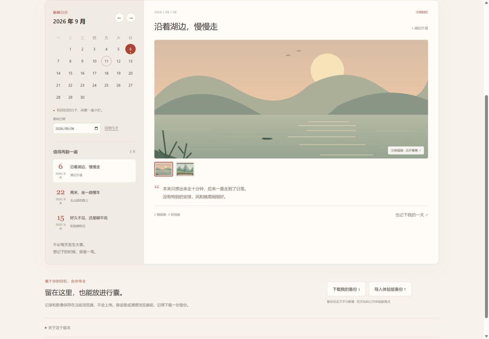

AI 出题工具
腾讯实习 · AI 产品实践
题目太固定，自由发挥又容易缺少约束。我设计了明暗题卡，让学生有选题空间，让面试官有追问线索。
AI 出题工具题卡设计示意
107 道题 · 20 个行业 · 3 个批次
看设计与演示
从业务里的问题，到自己想做的工具。
腾讯实习 · AI 产品实践
题目太固定，自由发挥又容易缺少约束。我设计了明暗题卡，让学生有选题空间，让面试官有追问线索。
107 道题 · 20 个行业 · 3 个批次
个人知识与 Agent 工作台
想把散落的资料整理好，让 AI 下次接着用。做过桌面原型，现在先聚焦知识提取与归档。

桌面原型 · 整体 Agent 目标尚未达成
个人影像记录工具
按见面的日期，找回一起拍过的照片。把影像、地点和当天的小事放在一起，日常回看更方便。

公开体验版 · 可以试用
个人游戏原型
我喜欢需要做决定、看后果的游戏。先做了六回合的规则原型，也在思考让 AI 在小镇里自由交流、演化。
做出选择，再看看世界发生了什么。
六回合规则原型 · 尚未接入模型
做调研、写方案，也把想法做成可以使用的工具。